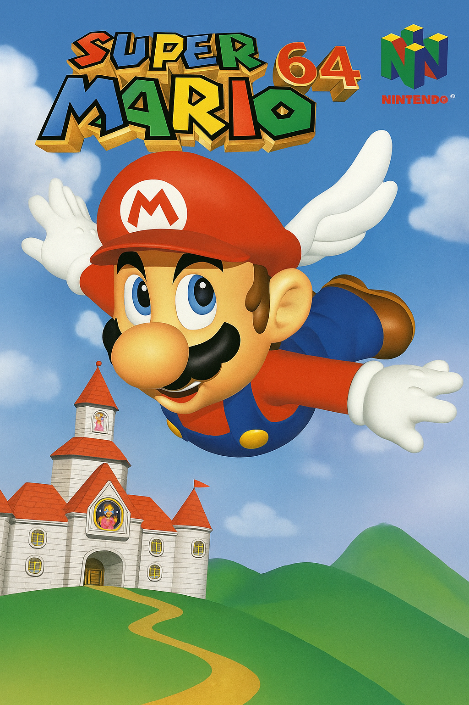
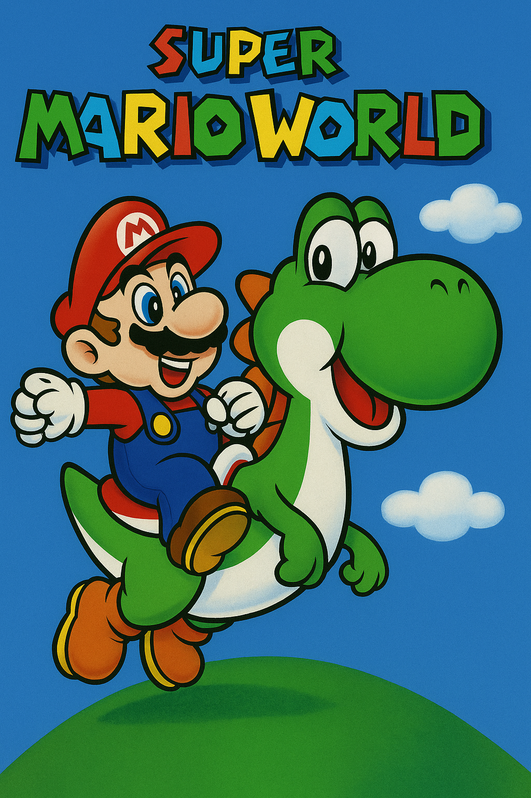
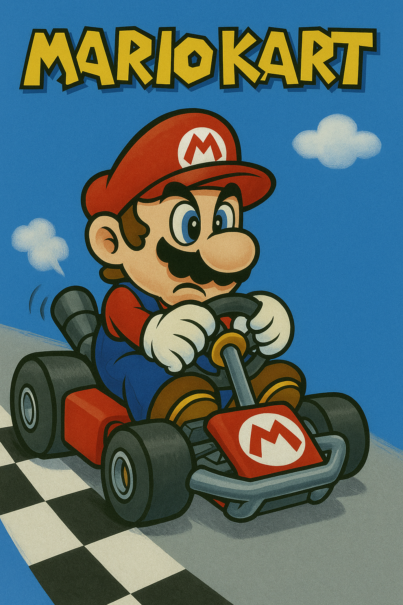
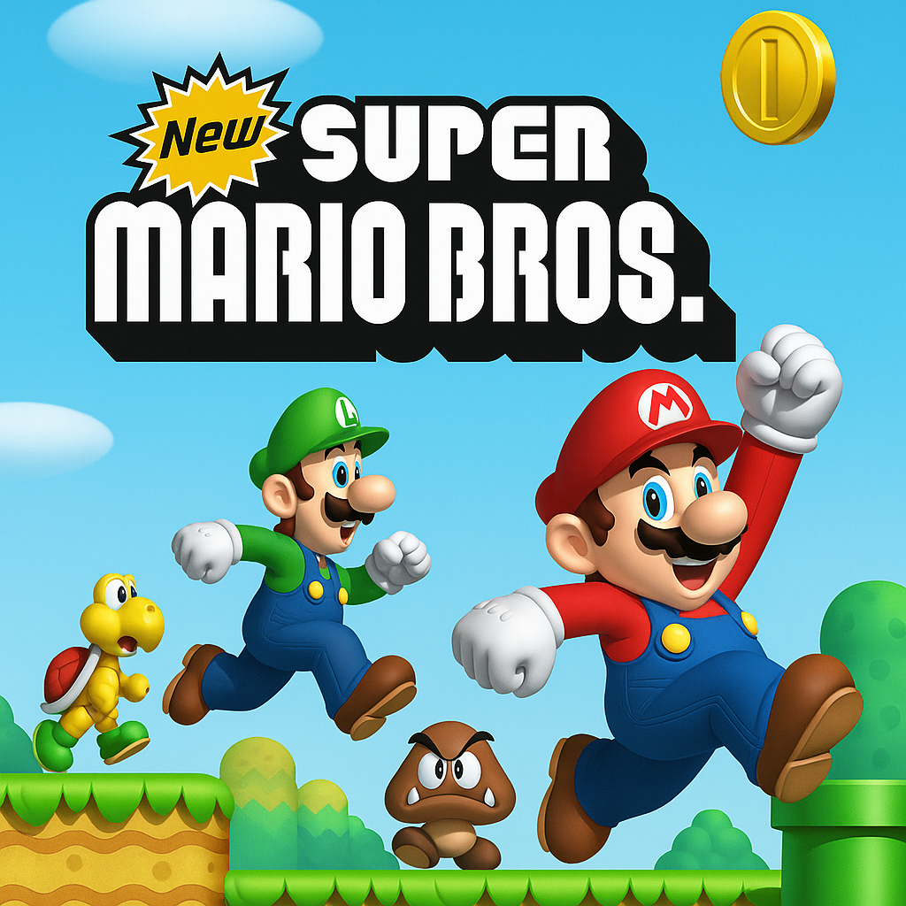
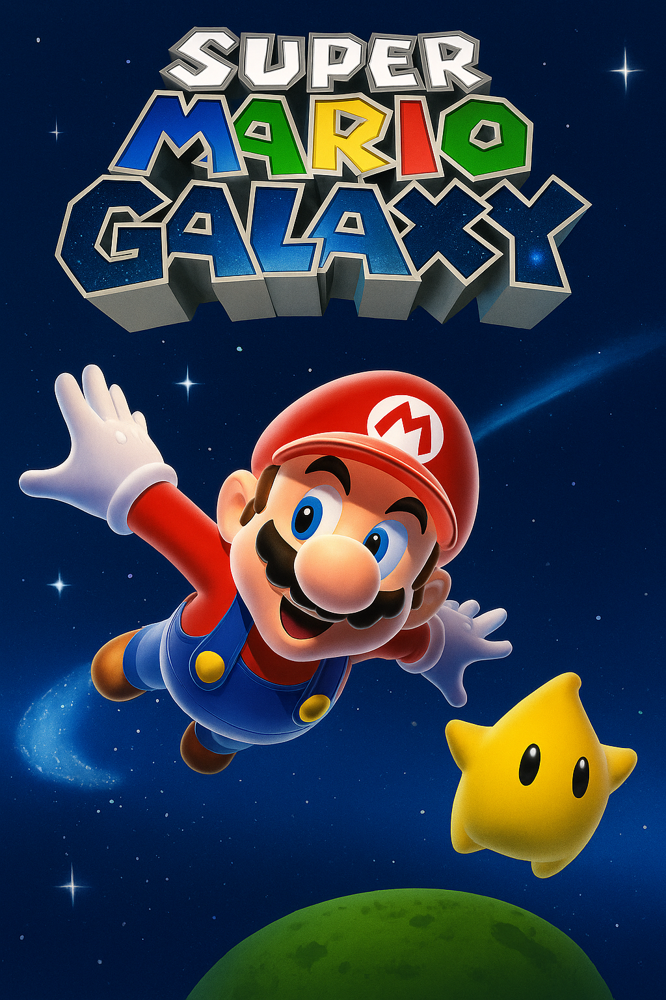
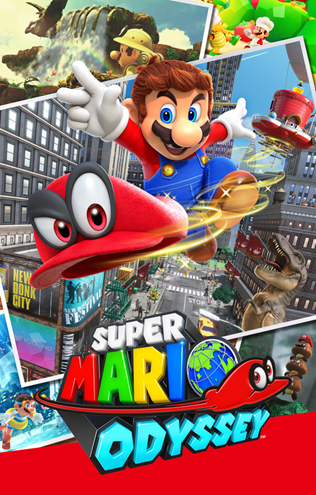
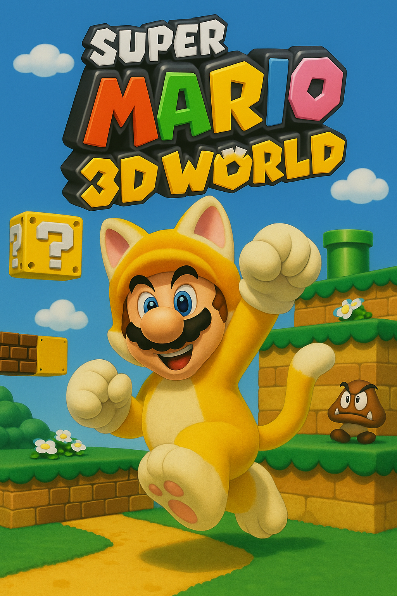

Super Mario 64
Um clássico revolucionário em 3D para o Nintendo 64.

Super Mario World
Um dos jogos mais queridos do Super Nintendo.

Mario Kart
Corridas caóticas e diversão com cascos e bananas.

New Super Mario Bros.
Revitalização em 2D com gráficos modernos.

Super Mario Galaxy
Aventura cósmica com gravidade invertida no Wii.

Super Mario Odyssey
Viagem pelo mundo com o chapéu mágico Cappy!

Super Mario 3D World
Gameplay cooperativo em um mundo 3D divertido.

Luigi's Mansion
Luigi explora mansões mal-assombradas para resgatar Mario.